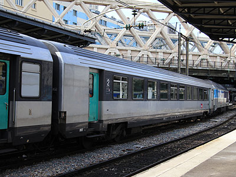
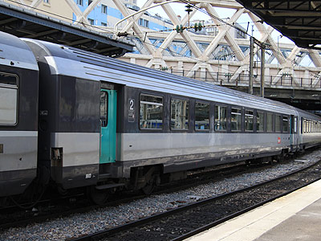
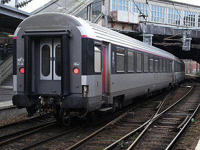
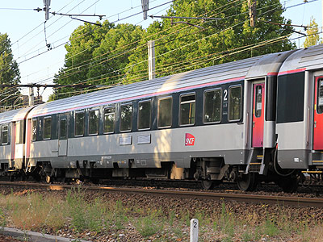

Corail Intercités Carmillon
Dans l'objectif de simplifier sa gamme de marques, la SNCF décide qu'au 1er janvier 2012, la marque Intercités absorbe toutes les activités en rame tractées qui ne sont pas du ressort des TER. C'est à dire l'activité Intercités elle-même, ainsi que Téoz, Aqualys et Lunéa (qui s'appelle désormais "Intercités de nuit").
Un nouveau revirement est acté également pour l'esthétique des voitures puisque la livrée Intercités à base de gris, vert et violet est aussitôt abandonnée. Tous les matériels passant en révision recevant la livrée Carmillon à base de gris métallisé pour les voitures de jour et de blanc pour les voitures couchettes.
Les essais de livrée
Il semble que la décision d'unifier la livrée ait été prise avant même que celle-ci soit clairement définie. Ainsi les premières voitures passant en révision sont sorties d'atelier avec une livrée incomplète. Les coloris sont les mêmes que la livrée Corail Nouvelle Déco, elle-même dérivée de la livrée Corail+. La bande blanche sous les baies disparait et plusieurs variantes sont testées pour la délimitation du bandeau gris foncé au niveau des portes d'accès. Le pelliculage Carmillon des portes ainsi que le liseré sur le battant de pavillon apparaissent peu après. Là aussi, des essais sont réalisés puisque différentes teintes ont été observées allant du rouge au rose violacé qui sera finalement retenu.
ex-Aqualys
Le parc Aqualys avait bénéficié d'une livrée spécifique au début des années 2000. Il était cependant rare de voir des rames homogènes et de nombreuses Corail Nouvelle Déco étaient mélangées. Le service Aqualys est supprimé depuis fin 2011. Ce parc a en partie été dispersé dans d'autres régions. On peut voir quelques exemplaires rouler en Midi-Pyrénées.
L'offre Corail sur la relation Paris-Orléans-Tours s'est largement réduite puisque la plupart des trains Intercités se limitent à Orléans et seuls quatre A/R quotidiens poursuivent sur Tours contre 15 auparavant. Les voitures utilisées passent en révision. L'intérieur conserve les sièges Tallon avec un réhoussage identique aux voitures Intercités Basse-Normandie. A l'extérieur, de nouveaux cartouches de classe sont collés mais ne sont pas généralisés. Ce parc est désormais commun avec celui de la relation Paris-Bourges-Montluçon.
ex-Teoz
Ce sont les voitures qui avaient subi les transformations les plus importantes à partir de 2003. L'intérieur s'est cependant dégradé rapidement. La rénovation Carmillon consiste à changer moquettes et revêtements de sièges. Les espaces fumoirs devenus inutiles sont remplacés par des sièges. Le remplacement des suspensions des bogies Y32 a été rendu nécessaire par le sol surélevé de ces voitures. Des prises de courant sont installées en 2e classe.
A l'extérieur, les ex-Téoz perdent la forte identité de leur ancienne livrée. Un oeil exercé repère cependant les baies à cadre métallique des VTU et l'aménagement spécifique de la voiture de services B3Su.
Si le nom de ces trains a changé de "Téoz" en "Intercités", les conditions d'exploitation demeurent identiques : des rames bloc de sept voitures forment des trains de sept ou quatorze caisses. Les cartouches de classe collés à côté des portes d'accès rappellent que ces trains sont à réservation obligatoire.
Autres Intercités
Tous les Intercités d'avant 2012 n'avaient pas bénéficié de la rénovation précédente. C'est le cas des relations Paris-Amiens-Boulogne ou Paris-Belfort par exemple. Ils reçoivent petit à petit des voitures Carmillon qui s'intercalent entre les dernières voitures "Nouvelle déco". Il s'agit dans ce cas d'une révision essentiellement technique. L'intérieur conserve les coloris Corail+.
Pour plus d'info :
La fiche Corail Intercités
sur Wikipedia.
Les Corail Intercités sur Trains-Europe.
Articles sur la fin des Aqualys et la rénovation des Téoz (
1,
2,
3) sur transportrail.

VTU B11tu n° 21-82 611-5 (Paris Est, 31/05/2012)

VTU B11tu n° 21-82 765-9 (Paris Est, 31/05/2012)

VTU B11rtu n° 21-82 985-3 (Amiens, 29/10/2012)

VU B3Su ex-Téoz n° 84-97 127-9 (Le Vert de Maisons, 19/06/2015)